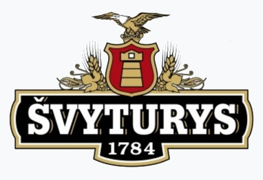

Švyturys
Švyturys는 리투아니아 클라이페다에 본사를 둔 맥주 양조장이다. 1784년에 상인 가문 Reincke가 설립했으며 리투아니아에서 두 번째로 오래된 맥주 양조장이다.
최종 업데이트

Švyturys는 어떤 브랜드인가
Švyturys는 리투아니아 클라이페다에 있는 맥주 양조장으로, 이름은 영어로 Lighthouse를 뜻한다. 이 양조장은 Švyturys-Utenos alus에 속하며, 이 회사는 Baltic Beverages Holding을 통해 Carlsberg Group이 지배한다.
옛 독일식 양조 기술을 지금도 사용해 수직·수평 용기에서 맥주를 빚는다. 리투아니아 대형 양조장 가운데 이런 용기를 쓰는 곳은 Švyturys뿐이다.
맥주는 호주, 캐나다, 덴마크, 에스토니아, 폴란드, 미국 등 20개국 넘게 수출된다. 2012년에는 약 34 million 리터를 생산할 계획이었으며 대부분이 Extra lager였고, 이 맥주는 2012년 World Beer Cup 금상을 받았다.
Švyturys는 어떻게 시작되고 성장했나
1784년 상인 J. Reincke가 클라이페다에 양조장을 세웠다.
당시 클라이페다의 독일식 이름은 Memel이었으며, 양조장 상징에는 Reincke 가문 문장에도 있는 바다독수리가 들어갔다. 1871년 Theodor Preuss의 양조장과 Reincke 후손의 양조장이 합병되어 주식회사 형태의 Memel 양조장이 되었다.
전쟁 중에는 Ostquell로 불렸고 1944년 거의 완전히 파괴되었다가 재건되어 1946년 Švyturys라는 이름으로 맥주 생산을 시작했다. 1960년대에 개발된 전통 Baltijos 맥주 레시피는 지금도 쓰인다.
Švyturys의 브랜드 아이덴티티는 무엇인가
리투아니아에서 두 번째로 오래된 양조장으로, 독일식 수직·수평 양조 용기를 쓰는 유일한 대형 리투아니아 양조장이다. 상징에는 바다독수리가 있다.
Švyturys의 대표 제품과 서비스는 무엇인가
대표 제품은 Extra lager로, 리투아니아에서 가장 많은 상을 받은 맥주이다. 전통 Baltijos는 Märzen 스타일 맥주이며 Švyturys 맥주 가운데 시장 선두가 되었다.
이 밖에 Švyturio Baltas(Hefeweizen), Švyturio Gintarinis(Pilsner), Švyturio Stipriausias(German-Style Bock), Švyturio 20 statinių(Stout), Švyturio Nealkoholinis(Lager) 등이 있다. Old Port Ale(Scottish Ale)과 Keltų(English Pale Ale) 같은 에일도 양조한다.
1973년에는 살균 맥주 생산을 시작했다.
Švyturys는 지금 어떤 상태인가
현재 Carlsberg Group이 소유하며 Baltic Beverages Holding을 통해 Švyturys-Utenos alus를 지배한다. 1999년 덴마크 기반 Carlsberg A/S가 지분 대부분을 인수해 생산 시설 개선에 투자했고, 2001년 Švyturys와 Utenos Alus가 Švyturys-Utenos Alus AB로 합병되었다.
2003년 2월 이 회사는 비공개 유한회사 Švyturys-Utenos Alus UAB로 개편되었다.
Švyturys 로고는 어떻게 변해왔나
자주 묻는 질문
Švyturys는 어떤 산업의 브랜드인가요?
Švyturys는 식음료 분야의 브랜드입니다.
Švyturys의 브랜드 아이덴티티는 무엇인가요?
리투아니아에서 두 번째로 오래된 양조장으로, 독일식 수직·수평 양조 용기를 쓰는 유일한 대형 리투아니아 양조장이다.
Švyturys의 대표 제품은 무엇인가요?
대표 제품은 Extra lager로, 리투아니아에서 가장 많은 상을 받은 맥주이다.
Švyturys는 어느 기업이 소유하고 있나요?
현재 Carlsberg Group이 소유하며 Baltic Beverages Holding을 통해 Švyturys-Utenos alus를 지배한다.
Švyturys의 본사는 어디에 있나요?
Švyturys의 본사는 클라이페다에 있습니다(위키데이터 기준).
출처와 검증
Švyturys 관련 참고: 위키데이터 Q12680342 · 영어 위키백과. 브랜드명은 한글과 원어를 함께 표기하되 데이터에 없는 표기는 만들지 않습니다. 기원 국가·설립연도는 검수된 정의문에서 확인된 값을 우선하고, 없을 때만 공식 웹사이트 URL이 일치하는 위키데이터 개체의 값을 씁니다. 탄생일의 월·일은 위키데이터, 위키백과 정보상자, 본문 가운데 같은 연월로 확인되는 값만 싣고, 출처끼리 다르면 싣지 않습니다. 위키데이터 값은 2026-11-09 기준입니다.